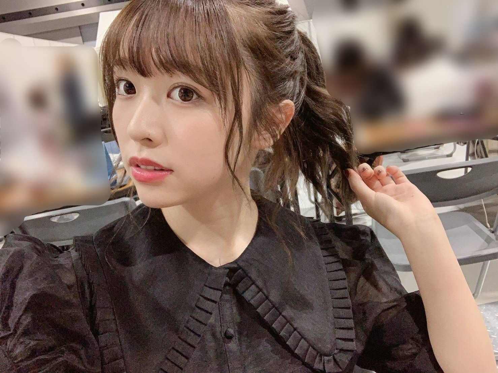
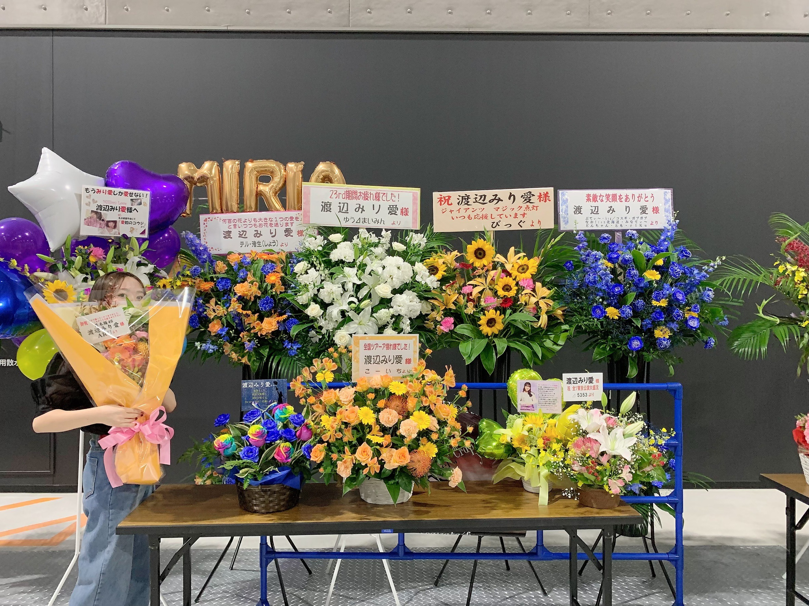
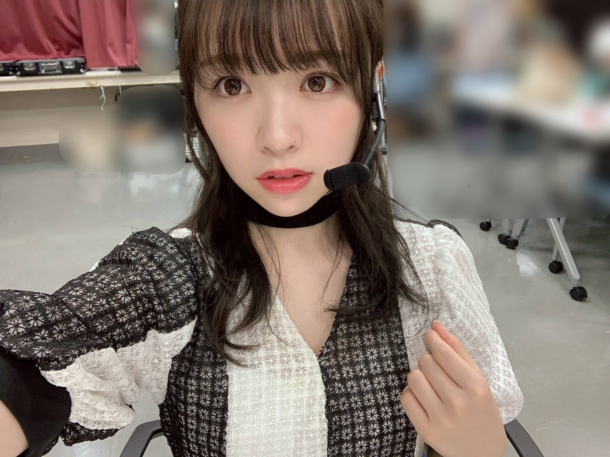

2019/0919Thuもののけ姫

そろそろおでんの季節ですよ〜
私は8月末からおでん生活開始しています！
3種類くらい好きなのを入れてスープは多め、
こんな事書いてたら食べたくなってきた。
皆さんの好きなおでんの具はなんですか？
先日は東京ビックサイトにて個別握手会
がありました。
お越し下さった皆様、有難うございました！

こちらは少々ややこしいのですが
名古屋の時に頂いたお花です。
東京では時間の都合上撮ることが出来ませんでした、、
申し訳ございません。
でも！しっかり目に焼き付けさせて頂きました！
有難うございましたm(._.)m

魚の骨

何の手？

夜明けまで強がらなくてもいい
ダンスや曲調、とても好みです！
のぎおび明日18:30〜です。
見てくださるととても嬉しいです。
みり愛
2019/09/19 19:48
コメント(699)
みり愛あああああ
コメント失礼しまーす！
みり愛おはよー
今日からまた1週間だ！
頑張らないと！
またコメントするねー
みり愛おはよー
今日からまた1週間だ！
頑張らないと！
またコメントするねー
みり愛あああああ (^ ^)！
(^ ^)！
 ◎U♡ｪ♡U
◎U♡ｪ♡U
可愛い乙姫さんですね
髪飾りも可愛いですよー(笑)
髪飾りも可愛いですよー(笑)
みり愛！今日も本当にお疲れ！
ユンだよー(^^)
今日も楽しめた？
ぼくは最近訓練の準備とかでパタパタしてるよー
今日も運動と訓練の準備とかで忙しかったな
でも後3週で休暇だし、その休暇中にはみり愛と逢えるから
もうちょっと頑張ろうと思ってる！！
早く逢いたいよおおー
そして兵役も後2ヶ月しか残ってない！
20ヶ月ぐらいだったからね
そしてラスト1ヶ月はほぼ休暇だからもう後1ヶ月で終わると言っても過言ではないね
今度の握手会が多分軍人としてのラスト握手！！
軍服でも着て行こうかなって(笑)
そしてメールもいつもありがとう！
いつもすごく力になります！
上海ライブ、本当にお疲れさま！！
海外でのライブはなんか違う感じ？？
いつか韓国も来て欲しいなー
その時はもうぼくが日本に住んでる可能性が高いけど(笑)
上海はどうだった？？
小さい頃家族旅行で行った事はあるけど、昔過ぎてあんま思い出さないや(笑)
料理とかは多分美味しかった気がするけどね
みり愛は楽しめた？？
ぼくも海外行きたいなあ
日本はもうすっごく行ってるけど、良い意味で馴染んできて海外って意味がしなくなってきたからね
台湾とか、欧州も行きたい！！
美術館がすごく好きで、フランスとドイツがすごく行ってみたい
イタリアも行ったことあるけど、パッケージツアーだったから今度は自由旅行で存分に楽しみたいし
みり愛も一緒に来る？(笑)
でもぼく、好きな作品あったらそこで30分もぼーっと見てる時もあるから迷惑すぎるかもよ(笑)
みり愛と旅行ならなんか笑顔が止まらない楽しいものになりそうだなー
旅行は本当に気の合う人と行かないとね！
そしてまた髪黒に染めた？？黒髪めっちゃ似合うけどー
そして掃除も大事だよね
ぼくはものをその場に置くとそれがずれるのが嫌いすぎてデスクはあんま掃除しないけど、それ以外なら結構綺麗ずきだからね
なんかホコリが無くなるのを見るとすっきりする(笑)
そして今度のハロウィンは乙姫だったのか！！
めっちゃ可愛い、、、
髪飾り似合いすぎるし、すごくゴージャス、、
100点満点の120点です
いつも握手会の写真送ってくれてありがとう！！
では、今日はこの辺で(^^)
また！！
ユン
ユンだよー(^^)
今日も楽しめた？
ぼくは最近訓練の準備とかでパタパタしてるよー
今日も運動と訓練の準備とかで忙しかったな
でも後3週で休暇だし、その休暇中にはみり愛と逢えるから
もうちょっと頑張ろうと思ってる！！
早く逢いたいよおおー
そして兵役も後2ヶ月しか残ってない！
20ヶ月ぐらいだったからね
そしてラスト1ヶ月はほぼ休暇だからもう後1ヶ月で終わると言っても過言ではないね
今度の握手会が多分軍人としてのラスト握手！！
軍服でも着て行こうかなって(笑)
そしてメールもいつもありがとう！
いつもすごく力になります！
上海ライブ、本当にお疲れさま！！
海外でのライブはなんか違う感じ？？
いつか韓国も来て欲しいなー
その時はもうぼくが日本に住んでる可能性が高いけど(笑)
上海はどうだった？？
小さい頃家族旅行で行った事はあるけど、昔過ぎてあんま思い出さないや(笑)
料理とかは多分美味しかった気がするけどね
みり愛は楽しめた？？
ぼくも海外行きたいなあ
日本はもうすっごく行ってるけど、良い意味で馴染んできて海外って意味がしなくなってきたからね
台湾とか、欧州も行きたい！！
美術館がすごく好きで、フランスとドイツがすごく行ってみたい
イタリアも行ったことあるけど、パッケージツアーだったから今度は自由旅行で存分に楽しみたいし
みり愛も一緒に来る？(笑)
でもぼく、好きな作品あったらそこで30分もぼーっと見てる時もあるから迷惑すぎるかもよ(笑)
みり愛と旅行ならなんか笑顔が止まらない楽しいものになりそうだなー
旅行は本当に気の合う人と行かないとね！
そしてまた髪黒に染めた？？黒髪めっちゃ似合うけどー
そして掃除も大事だよね
ぼくはものをその場に置くとそれがずれるのが嫌いすぎてデスクはあんま掃除しないけど、それ以外なら結構綺麗ずきだからね
なんかホコリが無くなるのを見るとすっきりする(笑)
そして今度のハロウィンは乙姫だったのか！！
めっちゃ可愛い、、、
髪飾り似合いすぎるし、すごくゴージャス、、
100点満点の120点です
いつも握手会の写真送ってくれてありがとう！！
では、今日はこの辺で(^^)
また！！
ユン
慎重勇者です⊂(ο･㉨･ο）⊃”くまﾃﾞｽ…
髪飾り&お姫様渡辺殿♡きゃわわうれぴーぽーo(￣◎￣)o ﾊﾞﾌﾞｩ♡
髪飾り&お姫様渡辺殿♡きゃわわうれぴーぽーo(￣◎￣)o ﾊﾞﾌﾞｩ♡
可愛い～～☆
上海公演おつかれさまでした
中国のみり愛ファンのかたもたくさん増えてきているようで凄くうれしいです。
地下鉄乃木坂駅に生誕ポスターが掲示されてる模様です。
モバメもブログも頑張ってくださいね。
ほな、ばいにゃら
いひひψ(｀∇´)ψ
上海公演おつかれさまでした
中国のみり愛ファンのかたもたくさん増えてきているようで凄くうれしいです。
地下鉄乃木坂駅に生誕ポスターが掲示されてる模様です。
モバメもブログも頑張ってくださいね。
ほな、ばいにゃら
いひひψ(｀∇´)ψ
アンダーライブに続いての上海公演、お疲れさまでした！
セットリストががらりと変わりそうな公演を2週以内に仕上げるのは毎度感服いたします！
仲の良い二期ちゃんたちとも一緒で楽しそうで何よりでした！
流石に参戦は出来ませんでしたが、12月末に特別Verが放映されるようですね。
台湾Verもライブ映像やロケがあったりしていたので、楽しみにしています(^^)
セットリストががらりと変わりそうな公演を2週以内に仕上げるのは毎度感服いたします！
仲の良い二期ちゃんたちとも一緒で楽しそうで何よりでした！
流石に参戦は出来ませんでしたが、12月末に特別Verが放映されるようですね。
台湾Verもライブ映像やロケがあったりしていたので、楽しみにしています(^^)
みりあ
みり愛さん
こんばんは
みり愛さんと旅行、行ってみたいなー
楽しそう(笑)
自分はシンプルなおでんが１番好きです
こんばんは
みり愛さんと旅行、行ってみたいなー
楽しそう(笑)
自分はシンプルなおでんが１番好きです
コメント失礼しまーす！
みり愛今日も1日お疲れ様‼️
今日もモバメありがとう！
何の撮影してるのかな〜？
今日は雨だったから、歩いて移動してる時に結構靴が濡れてしまった
テンション下がるよね
今日家に帰ったら、今週の工事中見ようかな！
またコメントするねー
みり愛今日も1日お疲れ様‼️
今日もモバメありがとう！
何の撮影してるのかな〜？
今日は雨だったから、歩いて移動してる時に結構靴が濡れてしまった
テンション下がるよね
今日家に帰ったら、今週の工事中見ようかな！
またコメントするねー
みり愛ちゃんこんばんは❗
上海でのライブ、みり愛ちゃんお疲れ様〜！
朝の情報番組で、みり愛ちゃんの可愛いツインテールがちらっと拝めた〜
なんて可愛いんだ(^^)
実際会場で観られたファンの人が羨ましいなあ
中国語での君の名は希望
いつもと違った感じだけど、これまた素晴らしくて改めてこの歌好きになったなあ
ああ〜、実際に聴きたかったなあ！
おでん、僕はオーソドックスに食べてるよ
辛いのダメなのでからしもつけないよ〜
お蕎麦もワサビつけないで食べる(^^;
みり愛ちゃん連日お仕事お疲れ様
なんか雨降りで肌寒い日が多いけど、みり愛ちゃん風邪引かないようにね！
秋の晴れた日には旅行行きたいなあ
僕はあまり観光客いないところ行きたい
静かなところでゆっくり紅葉眺めたい
それこそみり愛ちゃんのような人と行けたら尚良し(笑)
上海でのライブ、みり愛ちゃんお疲れ様〜！
朝の情報番組で、みり愛ちゃんの可愛いツインテールがちらっと拝めた〜
なんて可愛いんだ(^^)
実際会場で観られたファンの人が羨ましいなあ
中国語での君の名は希望
いつもと違った感じだけど、これまた素晴らしくて改めてこの歌好きになったなあ
ああ〜、実際に聴きたかったなあ！
おでん、僕はオーソドックスに食べてるよ
辛いのダメなのでからしもつけないよ〜
お蕎麦もワサビつけないで食べる(^^;
みり愛ちゃん連日お仕事お疲れ様
なんか雨降りで肌寒い日が多いけど、みり愛ちゃん風邪引かないようにね！
秋の晴れた日には旅行行きたいなあ
僕はあまり観光客いないところ行きたい
静かなところでゆっくり紅葉眺めたい
それこそみり愛ちゃんのような人と行けたら尚良し(笑)
みり愛ちゃん、こんばんは。
年末の足音が聞こえ始め、
周りはバタバタ、自分はアタフタ
今日は忙しくて吐きそうでしたよ...。
乃木坂もそろそろ年末モードかな？
その前にハロウィンがあるね
自分としては、ミイラ男(女？)の
コスプレが見てみたいです。
誰だかわからんか。
最近、一々よけいことを
考えてしまいます。
｢失敗したらどうしよう？｣
はい。よけいな考えです。
失敗したら、失敗したときに
考えればいいんだよね。
｢あの人はどう考えているのだろう？｣
はい。よけいな考えです。
その人に聞かない限り、
どんなに想像しても正しい答えなど
わかりませんね。
｢あの時、ああしておけばよかった｣
はい。よけいな考えです。
どんなに後悔しても、
過去には戻れません。
人間ってどうして100あるエネルギーの
半分以上も、よけいなことに費やすのかな？
いま、目の前のことに100の力を注げたら
100の力で人生を生きられるのに...
いま、ここ。
あとはすべてよけいなことだね。
最近ぐっと寒くなって、
風邪も流行りはじめましたね。
どうぞご自愛くださいませ。
年末の足音が聞こえ始め、
周りはバタバタ、自分はアタフタ
今日は忙しくて吐きそうでしたよ...。
乃木坂もそろそろ年末モードかな？
その前にハロウィンがあるね
自分としては、ミイラ男(女？)の
コスプレが見てみたいです。
誰だかわからんか。
最近、一々よけいことを
考えてしまいます。
｢失敗したらどうしよう？｣
はい。よけいな考えです。
失敗したら、失敗したときに
考えればいいんだよね。
｢あの人はどう考えているのだろう？｣
はい。よけいな考えです。
その人に聞かない限り、
どんなに想像しても正しい答えなど
わかりませんね。
｢あの時、ああしておけばよかった｣
はい。よけいな考えです。
どんなに後悔しても、
過去には戻れません。
人間ってどうして100あるエネルギーの
半分以上も、よけいなことに費やすのかな？
いま、目の前のことに100の力を注げたら
100の力で人生を生きられるのに...
いま、ここ。
あとはすべてよけいなことだね。
最近ぐっと寒くなって、
風邪も流行りはじめましたね。
どうぞご自愛くださいませ。
こんばんはー
今日もお疲れ様でした
今日は肌寒かったね
おでんは面白みもなくどノーマルのからしですな
でも、これからおでんが美味しい季節になるね～
今度、ゆず胡椒試してみようかな
読書の秋❗
自分はね、漫画を読むのは得意だけど、小説等の活字だけの本は苦手なんだよね
1冊読むのに何ヵ月もかかったりするくらい
風邪引かないように気を付けてね‼️
今日もお疲れ様でした
今日は肌寒かったね
おでんは面白みもなくどノーマルのからしですな
でも、これからおでんが美味しい季節になるね～
今度、ゆず胡椒試してみようかな
読書の秋❗
自分はね、漫画を読むのは得意だけど、小説等の活字だけの本は苦手なんだよね
1冊読むのに何ヵ月もかかったりするくらい
風邪引かないように気を付けてね‼️
こんばんは。
先日の仙台の握手会て初めて握手会参加しました。
仙台に来てくれてありがとうございます！
ファンになりました笑
応援しています！お身体にはお気をつけて(^^)
先日の仙台の握手会て初めて握手会参加しました。
仙台に来てくれてありがとうございます！
ファンになりました笑
応援しています！お身体にはお気をつけて(^^)
みり愛ちゃん。ブログ、メールいつもありがとうございます。
みり愛ちゃんにコメント書くの初めてだから、ちょっとドキドキしとります。笑笑
乃木坂の妹キャラって、たかお君はいいと思うよ。
関西は、気温は高くないけど、シッケが高くて暑がりのたかお君は、少々夏バテが抜けてないんやけど、みり愛ちゃんに癒されてなんとか、日々過ごしてます。
今度、坂道グループ合同研修生ツアーあるやん。勤務地が大阪やから、今日行くよ。
まだ、写真でしか分からへんのやけど、皆可愛いなー！
あっでも、みり愛ちゃん推しメンやからやきもちやかんといてな。
みり愛ちゃんにコメント書くの初めてだから、ちょっとドキドキしとります。笑笑
乃木坂の妹キャラって、たかお君はいいと思うよ。
関西は、気温は高くないけど、シッケが高くて暑がりのたかお君は、少々夏バテが抜けてないんやけど、みり愛ちゃんに癒されてなんとか、日々過ごしてます。
今度、坂道グループ合同研修生ツアーあるやん。勤務地が大阪やから、今日行くよ。
まだ、写真でしか分からへんのやけど、皆可愛いなー！
あっでも、みり愛ちゃん推しメンやからやきもちやかんといてな。
コメント失礼しまーす！
みり愛おはよー
朝から電車が遅れている〜
仕事で電車移動中なんだけど、アポイントの時間に間に合わないかもだ…
やっぱ時間に余裕を持って行動することは大事だね
みり愛は最近時間に間に合わなかったこととかある？
何となくみり愛はそういうところしっかりしてそう。
切り換えて仕事頑張ってきまーす！
またコメントするねー
みり愛おはよー
朝から電車が遅れている〜
仕事で電車移動中なんだけど、アポイントの時間に間に合わないかもだ…
やっぱ時間に余裕を持って行動することは大事だね
みり愛は最近時間に間に合わなかったこととかある？
何となくみり愛はそういうところしっかりしてそう。
切り換えて仕事頑張ってきまーす！
またコメントするねー
みり愛さんに看病されたいー(笑)
みり愛あああああ
今日もお疲れ様です‼️
こちらも仕事が終わり帰宅中
今日はとにかく眠い‼️寝たい
眠れるお薬を頂けますか？
あっ、もう、仕事終わったから時間外ですね
こちらも仕事が終わり帰宅中
今日はとにかく眠い‼️寝たい
眠れるお薬を頂けますか？
あっ、もう、仕事終わったから時間外ですね
遠出したい
でも何処に行こうか迷っているみり愛さん
そんな貴女にオススメの場所は
北海道の「紋別」という場所です
自分は何度か行ったことがありますが、静かで良い場所です
東京→紋別
紋別→東京
だけ、便がある珍しい場所です(笑)
参考になれば幸いです
でも何処に行こうか迷っているみり愛さん
そんな貴女にオススメの場所は
北海道の「紋別」という場所です
自分は何度か行ったことがありますが、静かで良い場所です
東京→紋別
紋別→東京
だけ、便がある珍しい場所です(笑)
参考になれば幸いです
コメント失礼しまーす！
みり愛今日も1日お疲れ様‼️
今日は朝から電車が遅れて大変だったけど、何とか乗り切れた〜
仕事終わった直後にモバメが来てて、嬉しかった！
遠出はどこに行きたいの？？
何か伊織ちゃんがインスタで出かけてる様子を投稿してるよ！
みり愛も遠出できる時間ができるといいな！
またコメントするねー
みり愛今日も1日お疲れ様‼️
今日は朝から電車が遅れて大変だったけど、何とか乗り切れた〜
仕事終わった直後にモバメが来てて、嬉しかった！
遠出はどこに行きたいの？？
何か伊織ちゃんがインスタで出かけてる様子を投稿してるよ！
みり愛も遠出できる時間ができるといいな！
またコメントするねー
みり愛ちゃん こんばんは(^o^)／
最近のモバメにちょっと返信するね。
○上海ライブお疲れ様(*^▽^)/ 12月にM-onTVで放送されるみたいだから、楽しみにしてるね(^^)d
12月にM-onTVで放送されるみたいだから、楽しみにしてるね(^^)d
○乙姫ちゃん 何だか色っぽくていいね
○おでんには辛子だけど、柚子胡椒も合いそうだね。想像したらお腹好いてきた(^_^;)
○みりあナースに診察されたい
○遠出かあ。京都に一緒に行きたいな(#^.^#)
○今は、まだ事務所にいるけど、仕事は終わって、これから、もうすぐ20歳になる人へのプレゼント考えようかなってところ(^^)v 10代もうすぐ終わっちゃうけど、彼女は今何を考えてるのかなあ(^.^)
11/9の個握、久々に会えるの楽しみ
じゃあまたね(^-^)/
最近のモバメにちょっと返信するね。
○上海ライブお疲れ様(*^▽^)/
○乙姫ちゃん 何だか色っぽくていいね
○おでんには辛子だけど、柚子胡椒も合いそうだね。想像したらお腹好いてきた(^_^;)
○みりあナースに診察されたい
○遠出かあ。京都に一緒に行きたいな(#^.^#)
○今は、まだ事務所にいるけど、仕事は終わって、これから、もうすぐ20歳になる人へのプレゼント考えようかなってところ(^^)v 10代もうすぐ終わっちゃうけど、彼女は今何を考えてるのかなあ(^.^)
11/9の個握、久々に会えるの楽しみ
じゃあまたね(^-^)/
チャァオ～～!☆彡
ソフトキャンディ～～の様なぁ～～～⤴️⤴️
めためた、とろとろお目目がぁ可愛いぃ～～⤴️⤴️
大好きなぁ～みりちゃまぁ～～～～⤴️⤴️❕❤️❤️❤️❤️❤️笑顔
ブログ更新してくれなきゃ～～～⤴️⤴️
(お菓子くれなきゃ～～⤴️⤴️・・)
毎日いっぱい・・・
煮込んだる❕❤️❤️❤️❤️❤️笑顔
(イタズラしちゃうぞ～～～⤴️⤴️❕❤️❤️❤️)
いや、違ったぁ❕❕・・・
ダ、ダ、ダメだぁ～～～⤴️⤴️⤴️
また、みりちゃまの可愛らしさに～～～⤴️⤴️
負けたぁ～～～～⤴️⤴️❕❤️❤️❤️❤️❤️笑顔
(*^▽^)/★*☆♪❤️❤️❤️
☆大人しい、おすまし！より☆彡
みり愛ちゃん、こんばんは！
メールの乙姫と看護師さんは
握手会のですよね。写真ありがとう！
そうそう、先週は北海道に行ってました（仕事）
ナナカマドの赤、モミジの赤からオレンジ
白樺の黄色が撮ってもきれいでした♪
綺麗なものを見ると、心洗われますねぇ
柚子胡椒は私も好きですよ♪
思わず付けすぎてしまいます笑
あ、そういえばもうじき・・・
では、お休みなさいｚｚｚ
メールの乙姫と看護師さんは
握手会のですよね。写真ありがとう！
そうそう、先週は北海道に行ってました（仕事）
ナナカマドの赤、モミジの赤からオレンジ
白樺の黄色が撮ってもきれいでした♪
綺麗なものを見ると、心洗われますねぇ
柚子胡椒は私も好きですよ♪
思わず付けすぎてしまいます笑
あ、そういえばもうじき・・・
では、お休みなさいｚｚｚ
こんばんは〜。
一日、お仕事お疲れ様でした。
モバメの写真ありがとうです。
おでんは味噌が多いですね。
朝晩、冷んやりしてきたので、
本格的におでんの季節ですね。
体調崩さないように気をつけてくださいね。
一日、お仕事お疲れ様でした。
モバメの写真ありがとうです。
おでんは味噌が多いですね。
朝晩、冷んやりしてきたので、
本格的におでんの季節ですね。
体調崩さないように気をつけてくださいね。
慎重勇者です⊂(ο･㉨･ο）⊃”くまﾃﾞｽ…
ナース風のお洋服を着た渡辺殿♡きゃわわうれぴーぽーo(￣◎￣)o ﾊﾞﾌﾞｩ♡
遠出いいよね～(o≧▽ﾟ)oニパッ♡日本庭園でぽっぽぽー[壁]ｴ＿)逆ﾁﾗﾘ♡
ほんじつも鉄火丼パワー100万馬力でばいころまる( ;-(ｴ)-)ゞｸﾏｯﾀﾅｧ…
ナース風のお洋服を着た渡辺殿♡きゃわわうれぴーぽーo(￣◎￣)o ﾊﾞﾌﾞｩ♡
遠出いいよね～(o≧▽ﾟ)oニパッ♡日本庭園でぽっぽぽー[壁]ｴ＿)逆ﾁﾗﾘ♡
ほんじつも鉄火丼パワー100万馬力でばいころまる( ;-(ｴ)-)ゞｸﾏｯﾀﾅｧ…
みり愛あああああ (^ ^)！
(^ ^)！
みり愛やっほい(^ ^)
アンダラの感想なんか反映されてなかったかも、、くうう(＞＜)まぁいいや、、！今度直接言いに行くからね〜！とにかく何が何でも行ってよかったと思えるライブだったよ！お風呂に浸かって寝ちゃったくらい頑張ったんだもんね！
あと台風の心配とかめっちゃしてくれるところがすごい好きよ。笑 なんとかお家帰れたし本当に行けてよかったなあ
みり愛のMステのまいやんとの絡みもすごくよかったから最近ハガキの感想欄にめっちゃ書いてる。笑笑 みり愛が食べてる姿みたいですとかまいやんとの絡みもみたいです〜って！実現するといいな笑
みり愛は上海に行ってたんだよね〜！いいなあ！私もいつか行きたいな、なんかツインテしてたの？？早く言ってよ〜もう。笑笑 ちょっとだけテレビのニュースでみり愛のツインテが見れたからよしとするかあ〜笑笑
てか今日はハロウィンだよ！みり愛は仙台で乙姫とナースもしたんだね！？絶対可愛かったよね！見たかったな〜ナースみり愛ちゃんに診察されたら心臓発作起こす気がする〜笑笑
明日はもう11月だよ！？はや〜笑笑 明日は大切な人のお誕生日(^ ^) だーれだ！正解は〜みり愛だよ！(それはそうか笑笑)
もう20歳だね〜！あんな幼かったみり愛が(^ ^) これからも大人っぽいみり愛も見れるのが楽しみだなあ。言ったらきりがない！笑笑 早く会いたいな( ˆ ˆ )/♡
とりあえず今日はみり愛ちゃんのためにバイトを頑張ってきます〜またね！
まこぺんより
アンダラの感想なんか反映されてなかったかも、、くうう(＞＜)まぁいいや、、！今度直接言いに行くからね〜！とにかく何が何でも行ってよかったと思えるライブだったよ！お風呂に浸かって寝ちゃったくらい頑張ったんだもんね！
あと台風の心配とかめっちゃしてくれるところがすごい好きよ。笑 なんとかお家帰れたし本当に行けてよかったなあ
みり愛のMステのまいやんとの絡みもすごくよかったから最近ハガキの感想欄にめっちゃ書いてる。笑笑 みり愛が食べてる姿みたいですとかまいやんとの絡みもみたいです〜って！実現するといいな笑
みり愛は上海に行ってたんだよね〜！いいなあ！私もいつか行きたいな、なんかツインテしてたの？？早く言ってよ〜もう。笑笑 ちょっとだけテレビのニュースでみり愛のツインテが見れたからよしとするかあ〜笑笑
てか今日はハロウィンだよ！みり愛は仙台で乙姫とナースもしたんだね！？絶対可愛かったよね！見たかったな〜ナースみり愛ちゃんに診察されたら心臓発作起こす気がする〜笑笑
明日はもう11月だよ！？はや〜笑笑 明日は大切な人のお誕生日(^ ^) だーれだ！正解は〜みり愛だよ！(それはそうか笑笑)
もう20歳だね〜！あんな幼かったみり愛が(^ ^) これからも大人っぽいみり愛も見れるのが楽しみだなあ。言ったらきりがない！笑笑 早く会いたいな( ˆ ˆ )/♡
とりあえず今日はみり愛ちゃんのためにバイトを頑張ってきます〜またね！
まこぺんより
みり愛ちゃん、こんばんは！
10代最後の日、楽しんでる？
ハッピーハロウィン♪
明日は盛大にお祝いしようね！
10代最後の日、楽しんでる？
ハッピーハロウィン♪
明日は盛大にお祝いしようね！
みり愛、こんばんは。。。。。
☆上海ライブ二日間 お疲れ様でした、、、
絢音ちゃんのブログに、二人の写真が載っていました、、、
詳細は、12月のTBS Channelの放送に期待しましょう、、、、
☆生誕Tシャツ 届いたよ、、、
ツアーの個別写真と一緒に、生誕グッズが届きました、、、
これで、11月9日、24日の全五部の個握に着て行けます、、、
よかった、よかった、、、
明日は、11月、、、今年もあと二ヶ月なんですね、、、、
くれぐれも身体を大切にしてくださいね。。。。。
☆上海ライブ二日間 お疲れ様でした、、、
絢音ちゃんのブログに、二人の写真が載っていました、、、
詳細は、12月のTBS Channelの放送に期待しましょう、、、、
☆生誕Tシャツ 届いたよ、、、
ツアーの個別写真と一緒に、生誕グッズが届きました、、、
これで、11月9日、24日の全五部の個握に着て行けます、、、
よかった、よかった、、、
明日は、11月、、、今年もあと二ヶ月なんですね、、、、
くれぐれも身体を大切にしてくださいね。。。。。
みり愛さん、お誕生日おめでとう
Happy Birthday to you you
あの小さかったみり愛ちゃんがもう二十歳かぁ。
今も身長は変わらな…(略 w
来年の成人式での晴れ着姿を
今からとても楽しみにしてます。
これからもずっと応援してます。
いつも、モバメありがとう
それではまたね～。
Happy Birthday to you you
あの小さかったみり愛ちゃんがもう二十歳かぁ。
今も身長は変わらな…(略 w
来年の成人式での晴れ着姿を
今からとても楽しみにしてます。
これからもずっと応援してます。
いつも、モバメありがとう
それではまたね～。
みり愛、二十歳の誕生日おめでとう。
乃木坂最年少で、紅白に出れないかもとか
言っていたのが、つい先日のようです。
もう、おねえさんメンバーだよね。
生誕Ｔシャツ、10月31日に届きました。
誕生日までに間に合いました。
今年は、選抜にも選ばれたし、
今も、音楽番組では、
ずっと出続けてくれるし、
約束していた、お花も、握手会に出すことが
できました。
二十歳のみり愛も、たくさん良いことが
ありますように。
これからも応援していくね。
乃木坂最年少で、紅白に出れないかもとか
言っていたのが、つい先日のようです。
もう、おねえさんメンバーだよね。
生誕Ｔシャツ、10月31日に届きました。
誕生日までに間に合いました。
今年は、選抜にも選ばれたし、
今も、音楽番組では、
ずっと出続けてくれるし、
約束していた、お花も、握手会に出すことが
できました。
二十歳のみり愛も、たくさん良いことが
ありますように。
これからも応援していくね。
みり愛っ！お誕生日おめでとう！！
いよいよ二十歳だね！！！！
加入当時、中学生だったみり愛が二十歳…
いやー、感慨深い！！
西武ドームで昇格したみり愛もの姿も、ブルーシアターのアンダーライブで1番輝いてたみり愛もとにかく懐かしいです！！
大人になったみり愛もずっと応援してるからね！！
11/9の個握には、想いを込めたお花を出すからね～是非見てね～♪
墨書うちわのみぅらっくすより！！
いよいよ二十歳だね！！！！
加入当時、中学生だったみり愛が二十歳…
いやー、感慨深い！！
西武ドームで昇格したみり愛もの姿も、ブルーシアターのアンダーライブで1番輝いてたみり愛もとにかく懐かしいです！！
大人になったみり愛もずっと応援してるからね！！
11/9の個握には、想いを込めたお花を出すからね～是非見てね～♪
墨書うちわのみぅらっくすより！！
みり愛サマ
お誕生日おめでとうございます!
ますます素敵な大人の女性になっていってくださいね。
最高の一年でありますように。
みり愛ちゃん、20歳の誕生日おめでとう✨いつも笑顔で頑張ってるみり愛ちゃんに元気をもらってます❣️20歳の一年も、ステキな年になることを祈ってます。
みり愛、お誕生日おめでとう！
握手会でも言ったけど20歳という節目の歳を楽しんでね！！
これからも応援し続けるから頑張ってね！！
お酒の飲み過ぎには気をつけなよ！笑
握手会でも言ったけど20歳という節目の歳を楽しんでね！！
これからも応援し続けるから頑張ってね！！
お酒の飲み過ぎには気をつけなよ！笑
誕生日おめでとう、20歳だね。
君が頑張ってくれているから自分も頑張れます、本当に有難う。
これからもよろしくお願いしますね。
君が頑張ってくれているから自分も頑張れます、本当に有難う。
これからもよろしくお願いしますね。
みりあちゃん、
お疲れさま。
そして、ハピバーーーーーーーーーーッ！
祝２０歳！
最年少だったみりあちゃんも最早中軸！
更に更にストロングポイントを追求して、乃木坂を引っ張っていって下さいね、、
オンもオフも素敵な1年になりますように、、
ほなね〜、、
お疲れさま。
そして、ハピバーーーーーーーーーーッ！
祝２０歳！
最年少だったみりあちゃんも最早中軸！
更に更にストロングポイントを追求して、乃木坂を引っ張っていって下さいね、、
オンもオフも素敵な1年になりますように、、
ほなね〜、、
誕生日おめでとうございます。こんなところに書くのはどうかと思ったけど書いちゃいました笑
１２月１５日個別握手会行きますね
ちょっと緊張で何を喋ったらいいのか
１２月１５日個別握手会行きますね
ちょっと緊張で何を喋ったらいいのか
お誕生日おめでとう！
みり愛が20歳になったことに驚きしかないのですが、年々ダンスがキレキレになっていて歌声も表現力も素晴らしくて尊敬しますし、最近では外番組や海外ライブでも選ばれたりとみり愛の活躍の場が増えていることが何よりも嬉しい限りです！
みり愛は最高のアイドルです！
みり愛が20歳になったことに驚きしかないのですが、年々ダンスがキレキレになっていて歌声も表現力も素晴らしくて尊敬しますし、最近では外番組や海外ライブでも選ばれたりとみり愛の活躍の場が増えていることが何よりも嬉しい限りです！
みり愛は最高のアイドルです！
みり愛ちゃん20歳の誕生日おめでと！！！
また握手会行くね！
また握手会行くね！
可愛い～～☆
みり愛ちゃん20歳のお誕生日おめでとう！
エドワードです。
2013年の乃木どこ#84を見て7月の『ガールズルール』ペア握手会ではじめて会って握手してから6年が経ちました。
見守ってきた娘が中学生から20歳の大人に成人したような気分でとても晴れがましく嬉しいです。
同じ時間を共有できて僕も一緒に成長してきたようなそんな感じです。
今年の4月末の4thアルバム個握のインテックス大阪でSing Out!初選抜おめでとうを言ったのがつい昨日のように思えます。
そのうち個握にまたおじゃまさせて頂きますよ。
ちなみにまだ1期生、3期生、4期生とは誰とも握手してないコテコテのみり愛単推し貫いてます。
ほな、ばいにゃら
いひひψ(｀∇´)ψ
みり愛ちゃん20歳のお誕生日おめでとう！
エドワードです。
2013年の乃木どこ#84を見て7月の『ガールズルール』ペア握手会ではじめて会って握手してから6年が経ちました。
見守ってきた娘が中学生から20歳の大人に成人したような気分でとても晴れがましく嬉しいです。
同じ時間を共有できて僕も一緒に成長してきたようなそんな感じです。
今年の4月末の4thアルバム個握のインテックス大阪でSing Out!初選抜おめでとうを言ったのがつい昨日のように思えます。
そのうち個握にまたおじゃまさせて頂きますよ。
ちなみにまだ1期生、3期生、4期生とは誰とも握手してないコテコテのみり愛単推し貫いてます。
ほな、ばいにゃら
いひひψ(｀∇´)ψ
おめでとう、おめでとう。
大人？(￣∀￣)？
大人？(￣∀￣)？
おでんの具は、
牛すじ。
つくね。
ガンモドキ。
牛すじ。
つくね。
ガンモドキ。
みり愛ちゃん二十歳のお誕生日おめでとうございます*\(^o^)/*。
最近のみり愛ちゃんはとても頼もしくて、でも可愛いさも増してて、う〜ん…すごく大好きです。
とにかくみり愛ちゃんのダンスが、しなやかな動き、指先まで気持ちの入った動き、これも大・大好きです。
みり愛ちゃんのポニーテール姿がたまらなく好き(*´꒳`*)。またお願いしますね。
モバメも毎回楽しいです。またいつもの連続写真、期待してますよ。
みり愛ちゃんの20歳代の活躍をしっかりと見届けます*\(^o^)/*。そのためにも全力で応援しますね。これからもみり愛ちゃんと一緒に過ごします。
だんだんと寒くなってきましたね。年末に向けてお仕事が忙しくなってきますので、体調に気を付けて、頑張ってください。
最近のみり愛ちゃんはとても頼もしくて、でも可愛いさも増してて、う〜ん…すごく大好きです。
とにかくみり愛ちゃんのダンスが、しなやかな動き、指先まで気持ちの入った動き、これも大・大好きです。
みり愛ちゃんのポニーテール姿がたまらなく好き(*´꒳`*)。またお願いしますね。
モバメも毎回楽しいです。またいつもの連続写真、期待してますよ。
みり愛ちゃんの20歳代の活躍をしっかりと見届けます*\(^o^)/*。そのためにも全力で応援しますね。これからもみり愛ちゃんと一緒に過ごします。
だんだんと寒くなってきましたね。年末に向けてお仕事が忙しくなってきますので、体調に気を付けて、頑張ってください。
あいしてるから
渡辺みり愛


みり愛ちゃん無事に日本に戻ってきたんだね〜(^^)
上海でのライブお疲れ様！
海外にも応援しているファンがいること、
そしてそんな皆さんにメンバーが会いに行ってライブが出来ること、とても素晴らしいね(^^)
みり愛ちゃんのパフォーマンス、しっかり見せつけたかな？
みり愛ちゃんたち、現地では美味しいものたくさん食べたようだけど、日本のお料理も恋しくならなかったかな？
(笑)
寒くなって温かい蒲団にくるまって寝るようになったら、
よく寝られるようになった(^^)
でもまだ冬が来るのは早すぎる〜(^^;